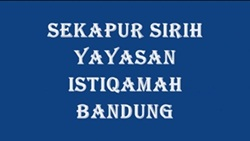
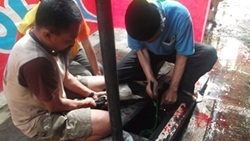
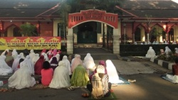
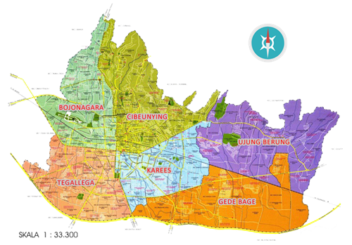

28 Maret 2014
04 Februari 2014
30 Januari 2014


Sejarah Yayasan Masjid Istiqamah Bandung
Istiqamah
Dokumentasi Ceramah Sore, Tanggal 04 Februari 2014
Al Ukhuwwah

Pemotongan Hewan Kurban Dalam Memperingati Idul Adha
Raya Cipaganti

Shalat Idul Adha Yang Dihadiri Masyarakat Sekitar Masjid
Raya Cipaganti

Berdasarkan Lokasi :
Merupakan fitur pencarian masjid dengan memasukan nama masjid yang dicari,
dapat mencari berdasarkan lokasi yang diinginkan dengan memilih wilayah dari kota Bandung yang telah terbagi menjadi 6 wilayah,
kemudian dapat mencari informasi mengenai rute angkot dari masjid yang akan dituju.
Berdasarkan Spesifikasi :
Merupakan fitur pencarian kegiatan,
fasilitas dan unit usaha yang terdapat pada masjid - masjid di semua wilayah kota Bandung.
Berdasarkan Nama :